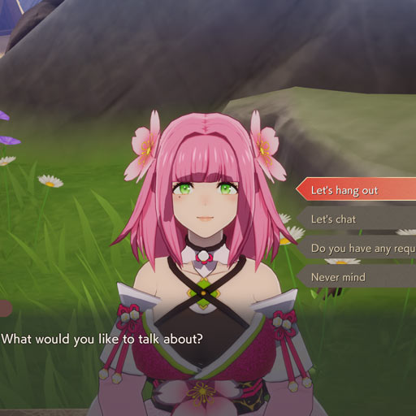
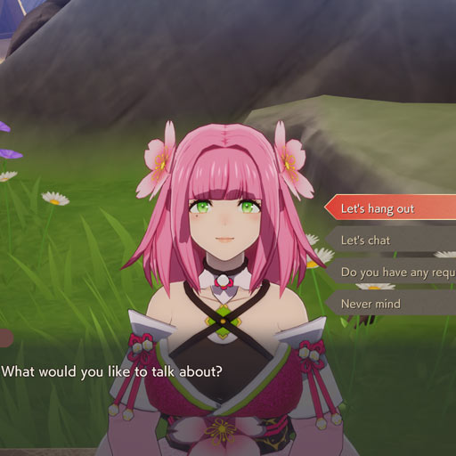

The Celestial Collapse — a calamity caused by a colossal object crashing into the eastern lands known as Azuma. The devastating impact sent fragments of terrain to the skies above and the seas below. With the earth shattered, the power provided by the runes ceased to flow. The gods of nature vanished soon after. Mountains crumbled and fields withered, leaving the people with nothing...not even hope.
You awaken, startled by a dream of dueling dragons. You don’t remember how or why, but a voice resonates within you.
"Accept the power of an Earth Dancer. Use this power to save the land."
Thus begins your lengthy journey to restore the gods...
Characters
- 移動
- Lスティック
- カメラ操作
- Rスティック
- 武器攻撃
- Yボタン
- カミワザ／特殊攻撃
- Xボタン
- インタラクト
- Aボタン
- ジャンプ
- Bボタン
- 神器変更
- Lボタン
- ステップ
- Rボタン
- 弓構え
- ZLボタン
- 舞構え
- ZRボタン
- ロックオン／カメラリセット
- Rスティックボタン
- 持ち物
- 方向ボタン［上］
- ミニマップの拡縮
- 方向ボタン［右］
- 武器変更
- 方向ボタン［左］
- 戦闘メンバー変更
- 方向ボタン［下］
- キャンプメニュー
- +ボタン
- マップ
- −ボタン
- 操作キャラクターのレベル（Lv.）
- ヒットポイント（HP）
- ルーンポイント（RP）
- 神気ゲージ
- パーティキャラクターのLv.とHP
- 現在の日付と時刻
- 現在いる里と里レベル
- お気に入り登録したアイテムの所持数
- ミニマップ
- 所持金
- 追跡状態のクエスト
- インタラクト情報
- 入手したアイテム
- ショートカット情報
- 装備中の武器
- 装備中の神器
メニュー
- 身支度
- 装備の変更やステータスの確認ができます。
- 持ち物
- 持ち物袋や整理箱、種苗倉庫などを確認できます。
- プロフィール
- 住人の絆レベルと各プロフィールを確認できます。
- パーティ
- 現在のパーティ編成や装備を変更できます。
- クエスト
- クエストとその詳細を確認できます。
- スキルツリー
- 戦闘、神器、生活などのスキルの確認、解放ができます。
- 里の状況
- 各里のレベルやミッション、人口の分布などを確認できます。
- 里の管理
- 里人の詳細の確認や仕事の割り振りなどができます。
- マップ
- 現在いる地方のマップを開きます。
- カレンダー
- 現在の日付や住人の誕生日を確認できます。
- 冒険の記録
- 魔物図鑑やチュートリアルなどを確認できます。
- システム
- 音量や操作などを設定できるほか、タイトルへ戻れます。

-
Socializing
 

里の中には仲良くなることで、一緒に冒険に出かけられたり、特別なイベントが発生する人がいます。いろんな人に毎日話しかけたり、一緒に過ごしたりしてみましょう。
「交流」について知る